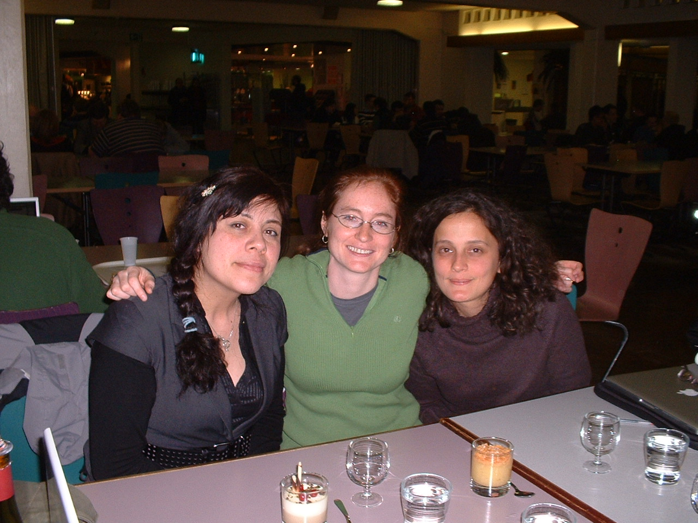
Astrid, Sevil and I in the CERN cafeteria [photo Eric Gawiser]
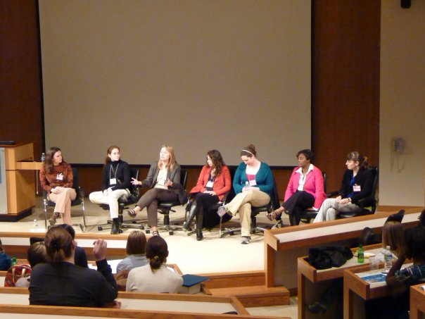
The graduate panel at the 2010 Southeastern
Conference for Undergraduate Women in Physics [photo credit unknown]
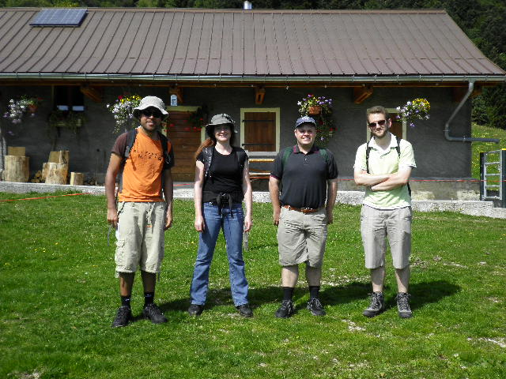
Hiking in the Juras (with physicists) [photo credit unknown]
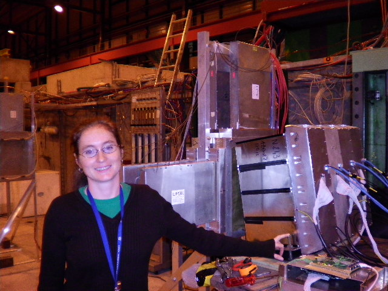
Me with the EMCal towers for the 2010 EMCal test beam [photo Betty
Abelev]
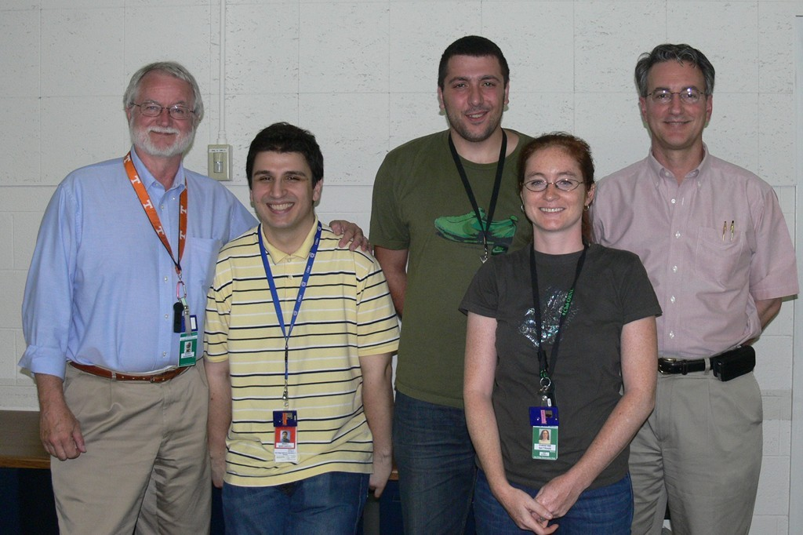
The group after Irakli passed his comprehensive exam [photo Rebecca
Scott]
left to right: Soren Sorensen, Irakli Martashvili, Archil
Garishvili, Christine Nattrass, Ken Read
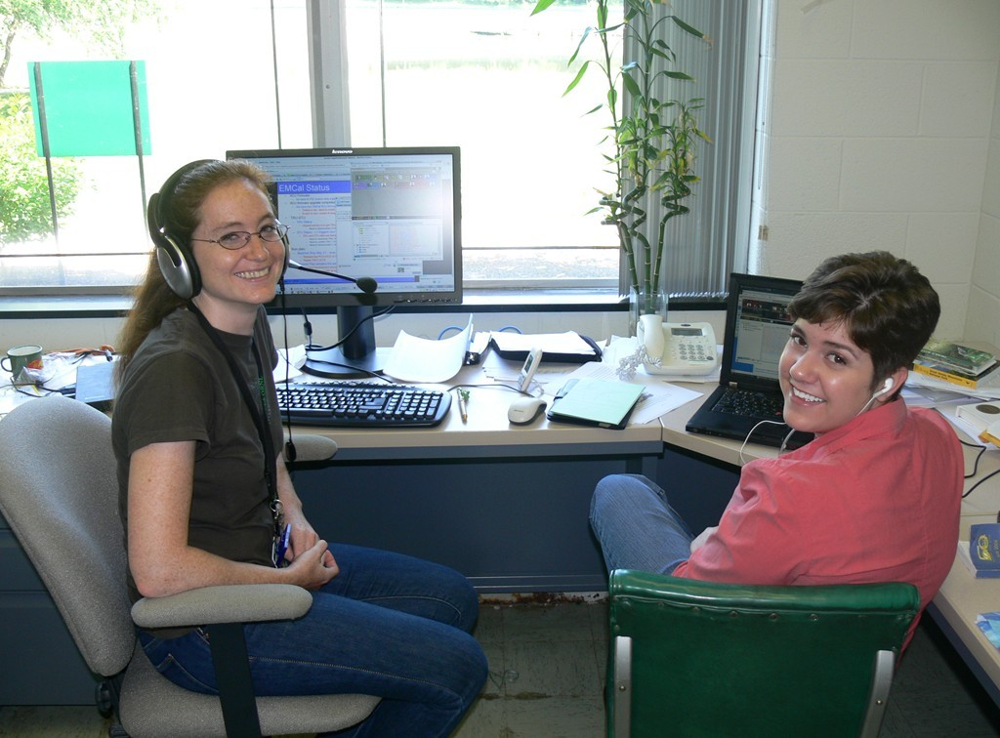
Rebecca and I attending the weekly EMCal phone meeting [photo Soren
Sorensen]
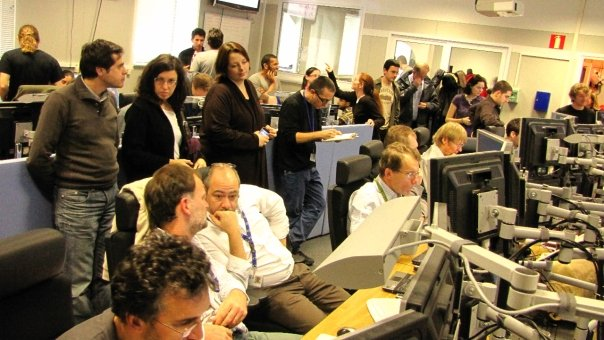
The ALICE control room on the day of first collisions [photo Federico
Ronchetti]
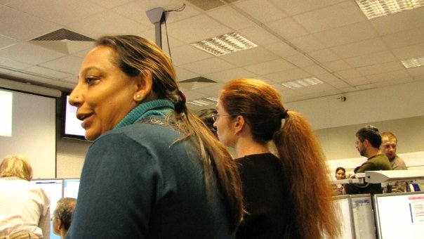
Anju Bhasin and I in the ALICE control room on the day of first
collisions [photo Federico
Ronchetti]
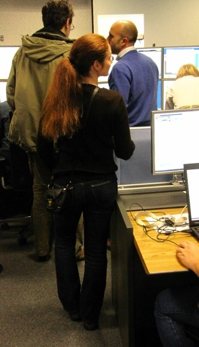
Me in the ALICE control room on the day of first collisions [photo
Federico
Ronchetti]
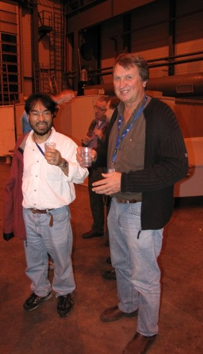
Jiro Fujita and Terry Awes at P2 on the day of first collisions [photo
Federico Ronchetti]
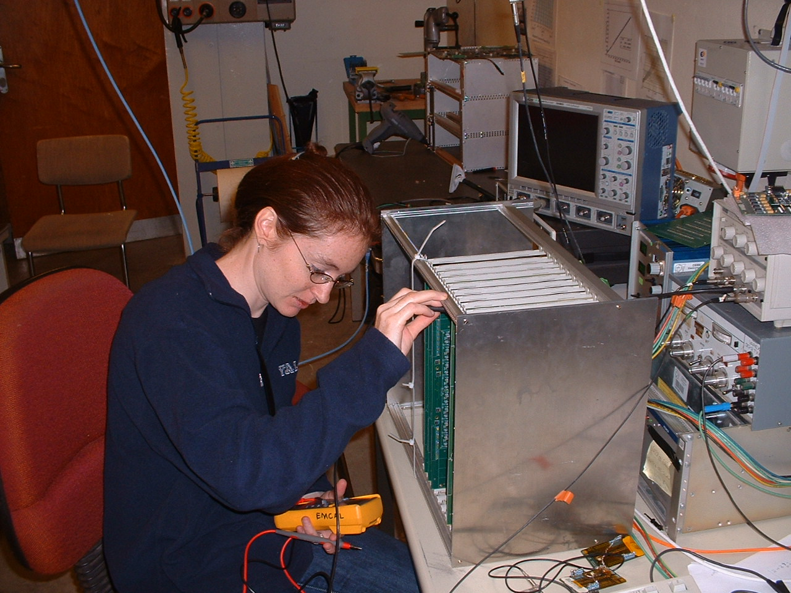
Me testing EMCal FEE boards [photo Irakli Martashvili]
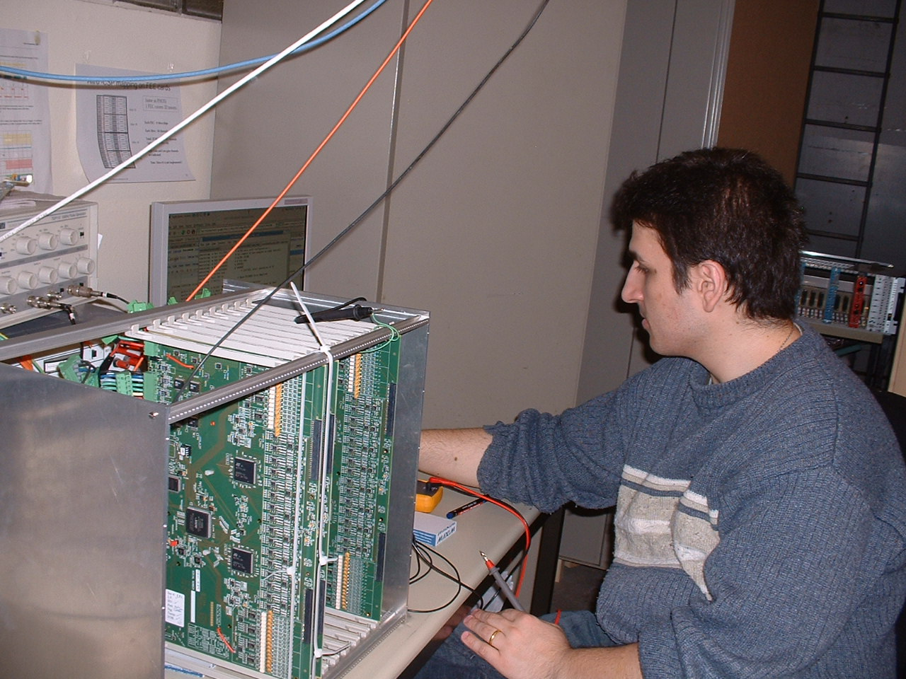
Irakli Martashvili testing EMCal FEE boards [photo Christine Nattrass]
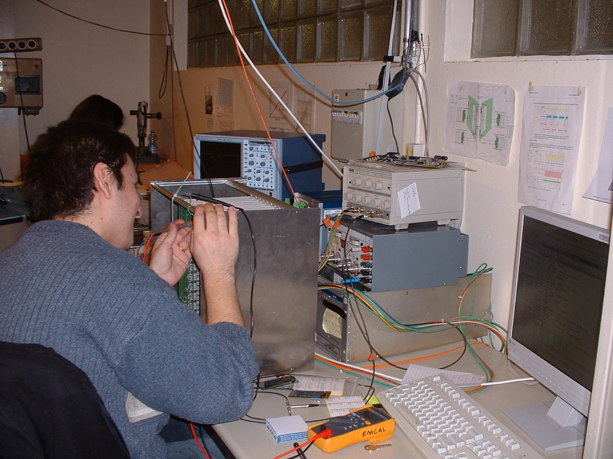
Irakli Martashvili testing EMCal FEE boards [photo Christine Nattrass]
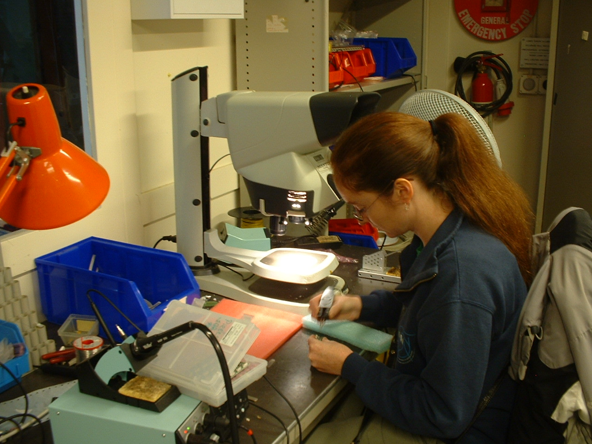
Soldering parts on photo diodes for the EMCal LED system [photo Irakli
Martashvili]
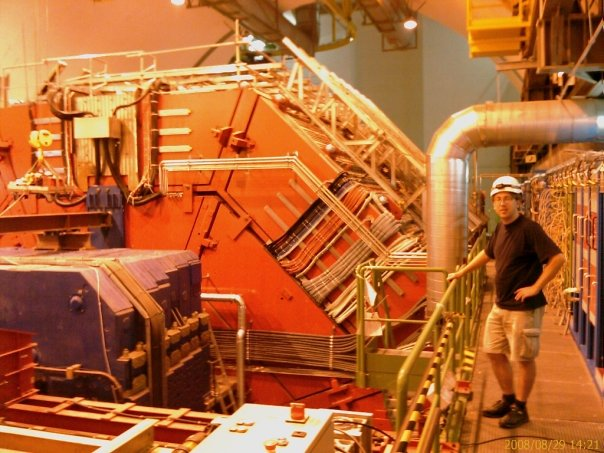
David Silvermyr in front of ALICE in August 2008 [photo Federico
Ronchetti]